在本章前面部分给出的几个例子里，我们在解某些方程式时应用了代数的黄金规则。如果方程式仅包含一个变量（例如x），且方程式两边都是线性的（仅包含数字和x的倍数，而没有像x2这种比较复杂的项），x的值就比较容易求解。例如，在解方程式9x – 7 = 47时，我们可以在方程式两边同时加上7，得到9x = 54，然后两边同时除以9，算出x = 6。
对于复杂程度稍高的代数问题，例如：
5x + 11 = 2x + 18
我们只需要在方程式两边同时减去2x，再同时减去11（如果你愿意，也可以将这两步合并，即方程式两边同时减去2x + 11），就会得到：
3x = 7
因此，原方程式的解是x = 7 / 3。所有线性方程式最终都可以简化成ax = b（或者ax–b = 0）的形式，从而求解出x = b / a（假设a≠0）。
二次方程式的复杂程度有所提高（因为需要考虑变量x2的问题）。最简单的二次方程式是如下这种：
x2 = 9
该方程式有两个解：x = 3和x = – 3。如果方程式右边不是完全平方数，比如x2 = 10，则该方程式有两个解：x =
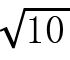
= 3.16…和x = –= –3.16…。在一般情况下，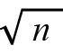
（n > 0）被称作n的平方根，表示某个二次幂等于n的整数。在n不是完全平方数时，我们通常可以利用计算器计算的值。如果x2 = –9呢？迄今为止，我们认为这个方程式无解。的确，任何实数（real numbers）的平方数都不会等于–9。但是，当读到本书第10章时，你会发现这个方程式其实有两个解，即x = 3i和x = –3i，其中i是一个虚数（imaginary numbers），它的平方数等于 –1。如果你觉得这个说法难以理解，甚至荒谬可笑，也没有关系。别忘了，在刚接触负数（negative numbers）时，你也曾觉得不可思议。（怎么可能有比0还小的数呢？）你现在需要做的就是以正确的方式看待这些数字，以后你会慢慢理解它们的含义的。
下面这个方程式：
x2 + 4x = 12
它的难度有所增加，因为多了4x这个项。不过你不用着急，对于这类方程式，我们有好几种解法。同心算一样，方程式也常常有多种解法。
我在遇到这类方程式时，会先尝试因式分解法。第一步是将所有项全部移到等式左边，等式右边只保留一项：0。于是，上述方程式变成：
x2 + 4x – 12 = 0
然后呢？我发现我们的运气还不错，根据FOIL法则，x2 + 4x – 12 = (x + 6) (x – 2)。于是，这个方程式又可以变形为：
(x + 6) (x – 2)= 0
两个数字的乘积为0，那么这两个数字中至少有一个是0。由此可知x + 6 = 0或x – 2 = 0，即：
x = – 6或x = 2
经检验，它们都是方程式的解。
根据FOIL法则，(x + a) (x + b) = x2 + (a + b)x + ab。因此，二次方程式的因式分解与猜谜语有点儿相似。例如，在解上面那个方程式时，我们必须找出和为4、积为 –12的两个数a、b。找到答案a = 6、b = – 2之后，就可以分解因式了。举一个例子供大家做练习：请分解x2 + 11x + 24。现在的问题是：找出和为11、积为24的两个数。由于数字3、8满足条件，因此我们知道x2 + 11x +24 = (x + 3) (x + 8)。
假设我们遇到像x2 + 9x = –13这样的方程式，就会发现x2 + 9x + 13不容易进行因式分解。但是，我们无须担心！在这种情况下，我们可以求助于二次方程求根公式。这是一个非常有用的公式，它告诉我们方程式ax2 + bx + c = 0的解是：
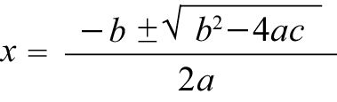
其中，符号“±”的意思是“加或减”。我们举一个例子，对于方程式
x2 + 4x – 12 = 0
我们知道，a = 1，b = 4，c = –12。
根据二次方程求根公式，我们知道：
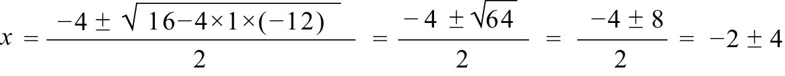
所以x = – 2 + 4 = 2或x = – 2 – 4 = –6是原方程式的解。我想，对于这类问题，你肯定认为因式分解法更直观。
解二次方程式的另一个有意思的方法叫作“配方法”（completing the square）。对于方程式x2 + 4x = 12，在两边同时加上4，把方程式变为：
x2 + 4x + 4 = 16
这样做的目的是让方程式左边变成 (x + 2) (x + 2)。因此，上述方程式变形为：
(x + 2)2 = 16
换句话说，(x + 2)2 = 42。于是：
x + 2 = 4或x + 2 = – 4
也就是说，x = 2或x = – 6。这与我们在前文中的计算结果是一致的。
但是，对于方程式
x2 + 9x + 13 = 0
最好的选择则是采用二次方程求根公式。a = 1，b = 9，c = 13，根据二次方程求根公式，我们算出：
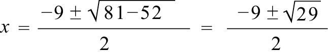
若用前面介绍的其他方法，就很难解出这道方程式。数学领域中需要记忆的公式并不多，但二次方程求根公式毫无疑问是其中之一。只要稍加练习，你就会发现这个公式应用起来实在是太简单了！
那么，二次方程求根公式为什么成立呢？我们把方程式ax2 + bx + c = 0改写成：
ax2 + bx = – c
两边同时除以a（a不等于0），就会得到：
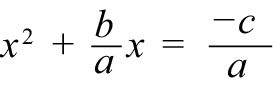
由于
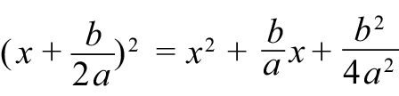
，因此我们可以在上述方程式两边同时加上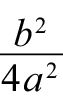
，对方程式进行配方运算：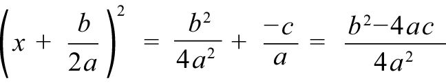
两边同时开平方，得到：
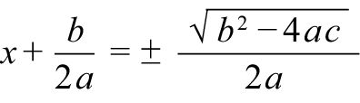
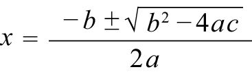
它就是我们要求的x的解。